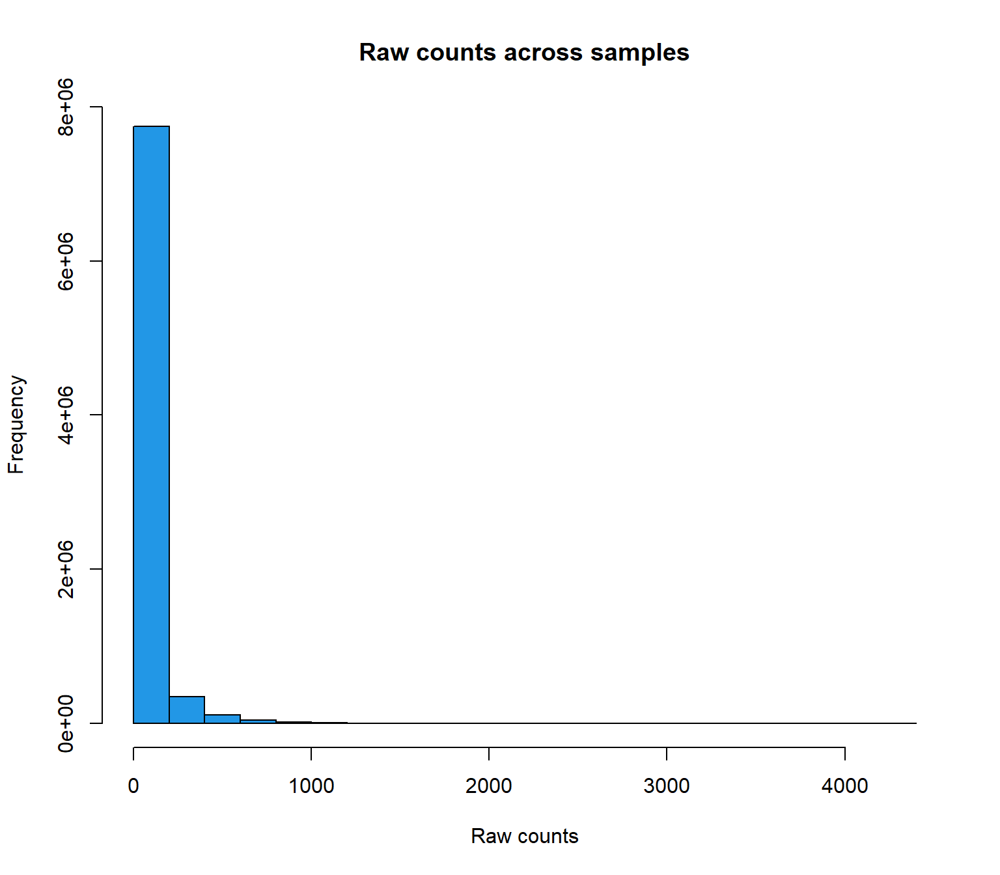
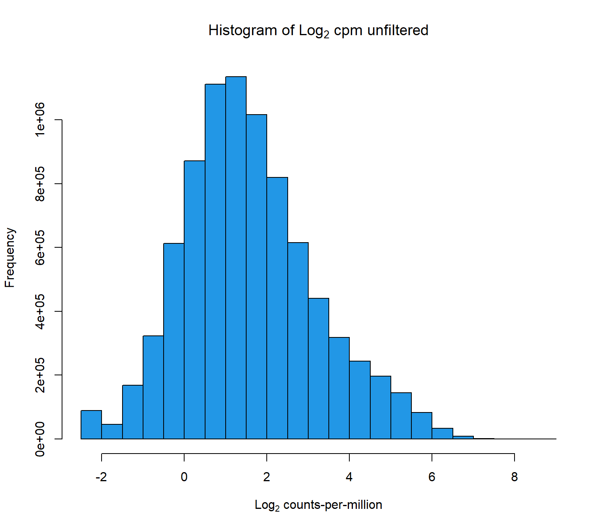
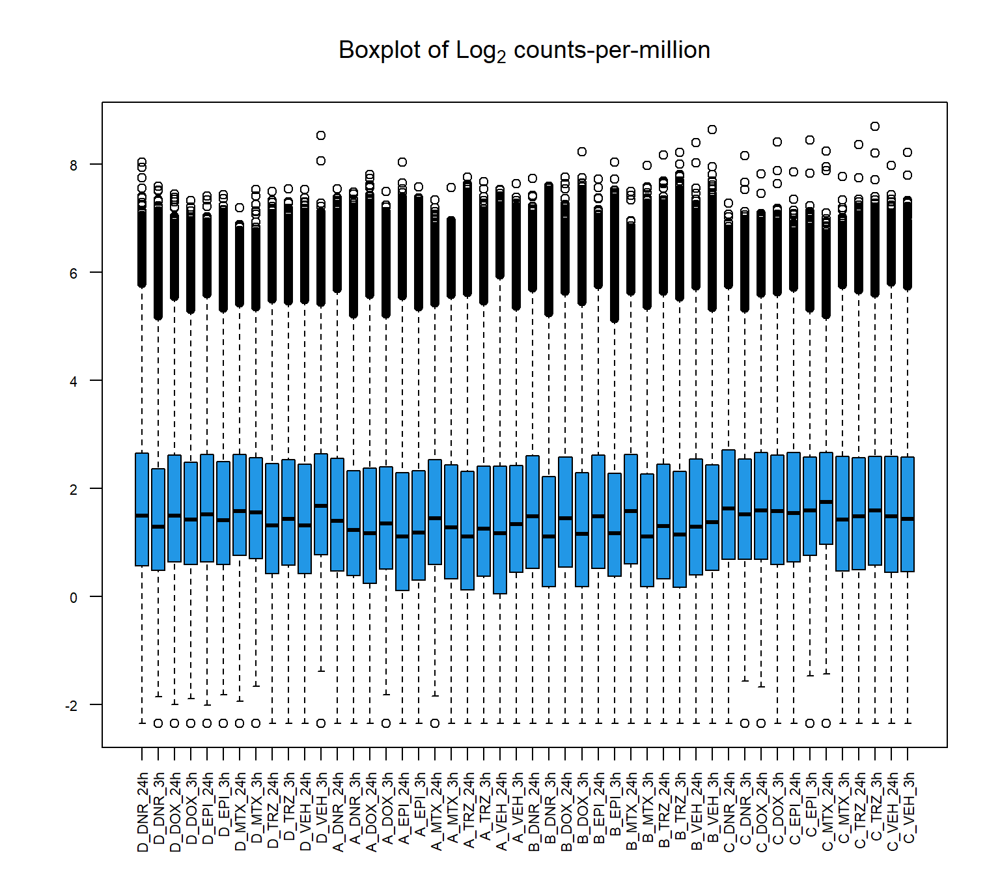
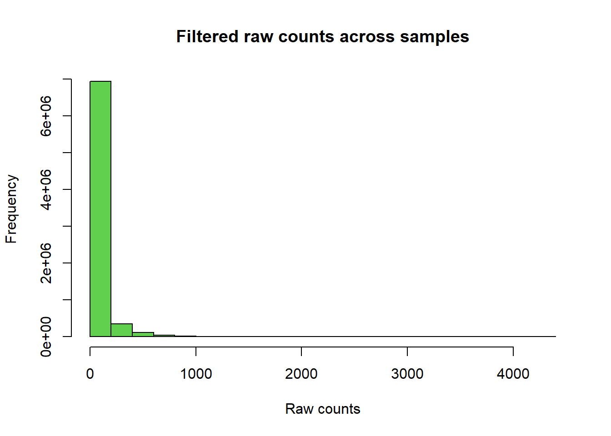
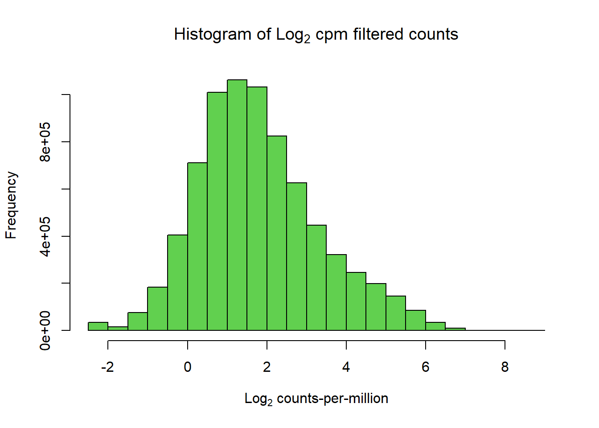
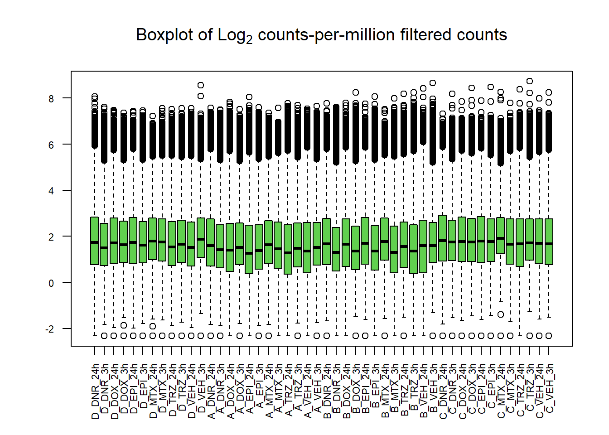

Counts_matrix
Renee Matthews
2025-05-06
Last updated: 2025-05-07
Checks: 7 0
Knit directory: ATAC_learning/
This reproducible R Markdown analysis was created with workflowr (version 1.7.1). The Checks tab describes the reproducibility checks that were applied when the results were created. The Past versions tab lists the development history.
Great! Since the R Markdown file has been committed to the Git repository, you know the exact version of the code that produced these results.
Great job! The global environment was empty. Objects defined in the global environment can affect the analysis in your R Markdown file in unknown ways. For reproduciblity it’s best to always run the code in an empty environment.
The command set.seed(20231016) was run prior to running
the code in the R Markdown file. Setting a seed ensures that any results
that rely on randomness, e.g. subsampling or permutations, are
reproducible.
Great job! Recording the operating system, R version, and package versions is critical for reproducibility.
Nice! There were no cached chunks for this analysis, so you can be confident that you successfully produced the results during this run.
Great job! Using relative paths to the files within your workflowr project makes it easier to run your code on other machines.
Great! You are using Git for version control. Tracking code development and connecting the code version to the results is critical for reproducibility.
The results in this page were generated with repository version d969893. See the Past versions tab to see a history of the changes made to the R Markdown and HTML files.
Note that you need to be careful to ensure that all relevant files for
the analysis have been committed to Git prior to generating the results
(you can use wflow_publish or
wflow_git_commit). workflowr only checks the R Markdown
file, but you know if there are other scripts or data files that it
depends on. Below is the status of the Git repository when the results
were generated:
Ignored files:
Ignored: .RData
Ignored: .Rhistory
Ignored: .Rproj.user/
Ignored: data/ACresp_SNP_table.csv
Ignored: data/ARR_SNP_table.csv
Ignored: data/All_merged_peaks.tsv
Ignored: data/CAD_gwas_dataframe.RDS
Ignored: data/CTX_SNP_table.csv
Ignored: data/Collapsed_expressed_NG_peak_table.csv
Ignored: data/DEG_toplist_sep_n45.RDS
Ignored: data/FRiP_first_run.txt
Ignored: data/Final_four_data/
Ignored: data/Frip_1_reads.csv
Ignored: data/Frip_2_reads.csv
Ignored: data/Frip_3_reads.csv
Ignored: data/Frip_4_reads.csv
Ignored: data/Frip_5_reads.csv
Ignored: data/Frip_6_reads.csv
Ignored: data/GO_KEGG_analysis/
Ignored: data/HF_SNP_table.csv
Ignored: data/Ind1_75DA24h_dedup_peaks.csv
Ignored: data/Ind1_TSS_peaks.RDS
Ignored: data/Ind1_firstfragment_files.txt
Ignored: data/Ind1_fragment_files.txt
Ignored: data/Ind1_peaks_list.RDS
Ignored: data/Ind1_summary.txt
Ignored: data/Ind2_TSS_peaks.RDS
Ignored: data/Ind2_fragment_files.txt
Ignored: data/Ind2_peaks_list.RDS
Ignored: data/Ind2_summary.txt
Ignored: data/Ind3_TSS_peaks.RDS
Ignored: data/Ind3_fragment_files.txt
Ignored: data/Ind3_peaks_list.RDS
Ignored: data/Ind3_summary.txt
Ignored: data/Ind4_79B24h_dedup_peaks.csv
Ignored: data/Ind4_TSS_peaks.RDS
Ignored: data/Ind4_V24h_fraglength.txt
Ignored: data/Ind4_fragment_files.txt
Ignored: data/Ind4_fragment_filesN.txt
Ignored: data/Ind4_peaks_list.RDS
Ignored: data/Ind4_summary.txt
Ignored: data/Ind5_TSS_peaks.RDS
Ignored: data/Ind5_fragment_files.txt
Ignored: data/Ind5_fragment_filesN.txt
Ignored: data/Ind5_peaks_list.RDS
Ignored: data/Ind5_summary.txt
Ignored: data/Ind6_TSS_peaks.RDS
Ignored: data/Ind6_fragment_files.txt
Ignored: data/Ind6_peaks_list.RDS
Ignored: data/Ind6_summary.txt
Ignored: data/Knowles_4.RDS
Ignored: data/Knowles_5.RDS
Ignored: data/Knowles_6.RDS
Ignored: data/LiSiLTDNRe_TE_df.RDS
Ignored: data/MI_gwas.RDS
Ignored: data/SNP_GWAS_PEAK_MRC_id
Ignored: data/SNP_GWAS_PEAK_MRC_id.csv
Ignored: data/SNP_gene_cat_list.tsv
Ignored: data/SNP_supp_schneider.RDS
Ignored: data/TE_info/
Ignored: data/TFmapnames.RDS
Ignored: data/all_TSSE_scores.RDS
Ignored: data/all_four_filtered_counts.txt
Ignored: data/aln_run1_results.txt
Ignored: data/anno_ind1_DA24h.RDS
Ignored: data/anno_ind4_V24h.RDS
Ignored: data/annotated_gwas_SNPS.csv
Ignored: data/background_n45_he_peaks.RDS
Ignored: data/cardiac_muscle_FRIP.csv
Ignored: data/cardiomyocyte_FRIP.csv
Ignored: data/col_ng_peak.csv
Ignored: data/cormotif_full_4_run.RDS
Ignored: data/cormotif_full_4_run_he.RDS
Ignored: data/cormotif_full_6_run.RDS
Ignored: data/cormotif_full_6_run_he.RDS
Ignored: data/cormotif_probability_45_list.csv
Ignored: data/cormotif_probability_45_list_he.csv
Ignored: data/cormotif_probability_all_6_list.csv
Ignored: data/cormotif_probability_all_6_list_he.csv
Ignored: data/datasave.RDS
Ignored: data/embryo_heart_FRIP.csv
Ignored: data/enhancer_list_ENCFF126UHK.bed
Ignored: data/enhancerdata/
Ignored: data/filt_Peaks_efit2.RDS
Ignored: data/filt_Peaks_efit2_bl.RDS
Ignored: data/filt_Peaks_efit2_n45.RDS
Ignored: data/first_Peaksummarycounts.csv
Ignored: data/first_run_frag_counts.txt
Ignored: data/full_bedfiles/
Ignored: data/gene_ref.csv
Ignored: data/gwas_1_dataframe.RDS
Ignored: data/gwas_2_dataframe.RDS
Ignored: data/gwas_3_dataframe.RDS
Ignored: data/gwas_4_dataframe.RDS
Ignored: data/gwas_5_dataframe.RDS
Ignored: data/high_conf_peak_counts.csv
Ignored: data/high_conf_peak_counts.txt
Ignored: data/high_conf_peaks_bl_counts.txt
Ignored: data/high_conf_peaks_counts.txt
Ignored: data/hits_files/
Ignored: data/hyper_files/
Ignored: data/hypo_files/
Ignored: data/ind1_DA24hpeaks.RDS
Ignored: data/ind1_TSSE.RDS
Ignored: data/ind2_TSSE.RDS
Ignored: data/ind3_TSSE.RDS
Ignored: data/ind4_TSSE.RDS
Ignored: data/ind4_V24hpeaks.RDS
Ignored: data/ind5_TSSE.RDS
Ignored: data/ind6_TSSE.RDS
Ignored: data/initial_complete_stats_run1.txt
Ignored: data/left_ventricle_FRIP.csv
Ignored: data/median_24_lfc.RDS
Ignored: data/median_3_lfc.RDS
Ignored: data/mergedPeads.gff
Ignored: data/mergedPeaks.gff
Ignored: data/motif_list_full
Ignored: data/motif_list_n45
Ignored: data/motif_list_n45.RDS
Ignored: data/multiqc_fastqc_run1.txt
Ignored: data/multiqc_fastqc_run2.txt
Ignored: data/multiqc_genestat_run1.txt
Ignored: data/multiqc_genestat_run2.txt
Ignored: data/my_hc_filt_counts.RDS
Ignored: data/my_hc_filt_counts_n45.RDS
Ignored: data/n45_bedfiles/
Ignored: data/n45_files
Ignored: data/other_papers/
Ignored: data/peakAnnoList_1.RDS
Ignored: data/peakAnnoList_2.RDS
Ignored: data/peakAnnoList_24_full.RDS
Ignored: data/peakAnnoList_24_n45.RDS
Ignored: data/peakAnnoList_3.RDS
Ignored: data/peakAnnoList_3_full.RDS
Ignored: data/peakAnnoList_3_n45.RDS
Ignored: data/peakAnnoList_4.RDS
Ignored: data/peakAnnoList_5.RDS
Ignored: data/peakAnnoList_6.RDS
Ignored: data/peakAnnoList_Eight.RDS
Ignored: data/peakAnnoList_full_motif.RDS
Ignored: data/peakAnnoList_n45_motif.RDS
Ignored: data/siglist_full.RDS
Ignored: data/siglist_n45.RDS
Ignored: data/summarized_peaks_dataframe.txt
Ignored: data/summary_peakIDandReHeat.csv
Ignored: data/test.list.RDS
Ignored: data/testnames.txt
Ignored: data/toplist_6.RDS
Ignored: data/toplist_full.RDS
Ignored: data/toplist_full_DAR_6.RDS
Ignored: data/toplist_n45.RDS
Ignored: data/trimmed_seq_length.csv
Ignored: data/unclassified_full_set_peaks.RDS
Ignored: data/unclassified_n45_set_peaks.RDS
Ignored: data/xstreme/
Untracked files:
Untracked: analysis/Diagnosis-tmm.Rmd
Untracked: analysis/Expressed_RNA_associations.Rmd
Untracked: analysis/LFC_corr.Rmd
Untracked: analysis/SVA.Rmd
Untracked: analysis/Tan2020.Rmd
Untracked: analysis/making_master_peaks_list.Rmd
Untracked: analysis/my_hc_filt_counts.csv
Untracked: code/IGV_snapshot_code.R
Untracked: code/LongDARlist.R
Untracked: code/just_for_Fun.R
Untracked: output/cormotif_probability_45_list.csv
Untracked: output/cormotif_probability_all_6_list.csv
Untracked: setup.RData
Unstaged changes:
Modified: ATAC_learning.Rproj
Modified: analysis/Jaspar_motif.Rmd
Modified: analysis/Jaspar_motif_ff.Rmd
Modified: analysis/final_four_analysis.Rmd
Note that any generated files, e.g. HTML, png, CSS, etc., are not included in this status report because it is ok for generated content to have uncommitted changes.
These are the previous versions of the repository in which changes were
made to the R Markdown (analysis/Counts_matrix.Rmd) and
HTML (docs/Counts_matrix.html) files. If you’ve configured
a remote Git repository (see ?wflow_git_remote), click on
the hyperlinks in the table below to view the files as they were in that
past version.
| File | Version | Author | Date | Message |
|---|---|---|---|---|
| Rmd | 2db35c7 | reneeisnowhere | 2025-05-07 | updates to analysis |
| html | 0b53518 | reneeisnowhere | 2025-05-06 | Build site. |
| Rmd | e08ea71 | reneeisnowhere | 2025-05-06 | updates |
| html | 193c36d | reneeisnowhere | 2025-05-06 | Build site. |
| Rmd | 7c62aac | reneeisnowhere | 2025-05-06 | reanalyze because of error |
library(tidyverse)
library(kableExtra)
library(broom)
library(RColorBrewer)
library(ChIPseeker)
library("TxDb.Hsapiens.UCSC.hg38.knownGene")
library("org.Hs.eg.db")
library(rtracklayer)
library(edgeR)
library(ggfortify)
library(limma)
library(readr)
library(BiocGenerics)
library(gridExtra)
library(VennDiagram)
library(scales)
library(BiocParallel)
library(ggpubr)
library(devtools)
library(eulerr)
library(ggsignif)
library(plyranges)
library(ggrepel)
library(ComplexHeatmap)
library(cowplot)
library(smplot2)
library(data.table)
library(ChIPpeakAnno)drug_pal <- c("#8B006D","#DF707E","#F1B72B", "#3386DD","#707031","#41B333")
prop_var_percent <- function(pca_result){
# Ensure the input is a PCA result object
if (!inherits(pca_result, "prcomp")) {
stop("Input must be a result from prcomp()")
}
# Get the standard deviations from the PCA result
sdev <- pca_result$sdev
# Calculate the proportion of variance
proportion_variance <- (sdev^2) / sum(sdev^2)*100
return(proportion_variance)
}Examining the counts matrix:
This section is using the featureCounts matrix of the 172,481 high confidence peaks across all samples called “all_four_filtered_counts.txt”.
### Load the table
all_four_filt_counts <- read.delim("data/all_four_filtered_counts.txt",header=TRUE) %>%
GRanges() %>%
keepStandardChromosomes(pruning.mode = "coarse") %>%
as.data.frame()
##remove tail from column names
names(all_four_filt_counts) = gsub(pattern = "_S.*", replacement = "", x = names(all_four_filt_counts))
### remove directory from individual file names
names(all_four_filt_counts) = gsub(pattern = "ind1.trimmed.filt_files.trimmed_|ind2.trimmed.filt_files.trimmed_|ind3.trimmed.filt_files.trimmed_|ind6.trimmed.filt_files.trimmed_", replacement = "", x = names(all_four_filt_counts))The number of peaks from master peak set: 172481 peaks
Looking at the counts matrix
raw_counts <- all_four_filt_counts %>%
dplyr::select(Geneid,Ind1_75DA24h:Ind6_71V3h) %>%
column_to_rownames("Geneid") %>%
rename_with(.,~gsub(pattern = "Ind1_75", replacement = "D_",.)) %>%
rename_with(.,~gsub(pattern = "Ind2_87", replacement = "A_",.)) %>%
rename_with(.,~gsub(pattern = "Ind3_77", replacement = "B_",.)) %>%
rename_with(.,~gsub(pattern = "Ind6_71", replacement = "C_",.)) %>%
rename_with(.,~gsub( "DX" ,'DOX',.)) %>%
rename_with(.,~gsub( "DA" ,'DNR',.)) %>%
rename_with(.,~gsub( "E" ,'EPI',.)) %>%
rename_with(.,~gsub( "T" ,'TRZ',.)) %>%
rename_with(.,~gsub( "M" ,'MTX',.)) %>%
rename_with(.,~gsub( "V" ,'VEH',.)) %>%
rename_with(.,~gsub("24h","_24h",.)) %>%
rename_with(.,~gsub("3h","_3h",.)) %>%
as.matrix()
hist(raw_counts, main= "Raw counts across samples",
xlab = "Raw counts",
col=4)
| Version | Author | Date |
|---|---|---|
| 193c36d | reneeisnowhere | 2025-05-06 |
hist(cpm(raw_counts, log=TRUE),
main = expression("Histogram of Log"[2]*" cpm unfiltered"),
xlab = expression("Log"[2]*" counts-per-million"),
col=4)
| Version | Author | Date |
|---|---|---|
| 193c36d | reneeisnowhere | 2025-05-06 |
boxplot(cpm(raw_counts, log=TRUE),
main=expression("Boxplot of Log"[2]*" counts-per-million"),
col=4,
names=colnames(raw_counts),
las=2, cex.axis=.7)
| Version | Author | Date |
|---|---|---|
| 193c36d | reneeisnowhere | 2025-05-06 |
Saving a .tsv of the raw unfiltered counts:
raw_counts %>%
as.data.frame() %>%
rownames_to_column("Peakid") %>%
write_delim(., "data/Final_four_data/re_analysis/Raw_unfiltered_counts.tsv",delim="\t")Heatmap of unfiltered log2 cpm counts
cor_raw_counts <- raw_counts %>%
cpm(., log = TRUE) %>%
cor(.,method = "pearson")
anno_raw_counts <- data.frame(timeset = colnames(cor_raw_counts))
counts_corr_mat <-anno_raw_counts %>%
separate(timeset, into = c("indv","trt","time"), sep= "_") %>%
mutate(class = if_else(trt == "DNR", "AC",
if_else(trt == "DOX", "AC",
if_else(trt == "EPI", "AC", "nAC")))) %>%
mutate(TOP2i = if_else(trt == "DNR", "yes",
if_else(trt == "DOX", "yes",
if_else(trt == "EPI", "yes",
if_else(trt == "MTX", "yes", "no")))))
mat_colors <- list(
trt= c("#F1B72B","#8B006D","#DF707E","#3386DD","#707031","#41B333"),
indv=c("#1B9E77", "#D95F02" ,"#7570B3", "#E6AB02"),
time=c("pink", "chocolate4"),
class=c("yellow1","darkorange1"),
TOP2i =c("darkgreen","lightgreen"))
names(mat_colors$trt) <- unique(counts_corr_mat$trt)
names(mat_colors$indv) <- unique(counts_corr_mat$indv)
names(mat_colors$time) <- unique(counts_corr_mat$time)
names(mat_colors$class) <- unique(counts_corr_mat$class)
names(mat_colors$TOP2i) <- unique(counts_corr_mat$TOP2i)
htanno_full <- ComplexHeatmap::HeatmapAnnotation(df = counts_corr_mat, col = mat_colors)
Heatmap(cor_raw_counts, top_annotation = htanno_full)
| Version | Author | Date |
|---|---|---|
| 193c36d | reneeisnowhere | 2025-05-06 |
Filtering out low counts
Using a log2cpm row_means>0, I filtered out the peaks with very low counts. I discovered there were three Y-chromosome reads and also removed them.
lcpm <- cpm(raw_counts, log= TRUE)
### for determining the basic cutoffs
filt_raw_counts <- raw_counts[rowMeans(lcpm)> 0,]
dim(filt_raw_counts)[1] 155560 48tail(rownames(filt_raw_counts),n=10) [1] "chrX.155755841.155756459" "chrX.155767114.155768688"
[3] "chrX.155819666.155820696" "chrX.155880909.155881872"
[5] "chrX.155888167.155888502" "chrX.155948972.155949499"
[7] "chrX.155997370.155997776" "chrY.11293234.11293637"
[9] "chrY.11295399.11295868" "chrY.56836676.56837364" Looking at the data set, I found there were three Y chromosome peaks and removed them.
filt_raw_counts_noY <- filt_raw_counts[!grepl("chrY",rownames(filt_raw_counts)),]
dim(filt_raw_counts_noY)[1] 155557 48tail(filt_raw_counts_noY) D_DNR_24h D_DNR_3h D_DOX_24h D_DOX_3h D_EPI_24h
chrX.155767114.155768688 105 57 139 58 110
chrX.155819666.155820696 257 78 250 64 273
chrX.155880909.155881872 277 248 287 254 324
chrX.155888167.155888502 42 19 83 20 72
chrX.155948972.155949499 39 23 68 26 47
chrX.155997370.155997776 23 4 19 9 37
D_EPI_3h D_MTX_24h D_MTX_3h D_TRZ_24h D_TRZ_3h
chrX.155767114.155768688 55 102 34 81 68
chrX.155819666.155820696 49 219 94 72 58
chrX.155880909.155881872 199 280 176 270 202
chrX.155888167.155888502 13 52 27 12 32
chrX.155948972.155949499 18 52 10 21 14
chrX.155997370.155997776 12 22 9 27 9
D_VEH_24h D_VEH_3h A_DNR_24h A_DNR_3h A_DOX_24h
chrX.155767114.155768688 114 42 49 98 51
chrX.155819666.155820696 106 36 123 95 129
chrX.155880909.155881872 406 104 241 235 204
chrX.155888167.155888502 22 10 11 19 12
chrX.155948972.155949499 29 12 31 30 25
chrX.155997370.155997776 42 16 8 10 11
A_DOX_3h A_EPI_24h A_EPI_3h A_MTX_24h A_MTX_3h
chrX.155767114.155768688 79 48 123 100 127
chrX.155819666.155820696 63 55 70 152 160
chrX.155880909.155881872 184 183 226 228 341
chrX.155888167.155888502 10 7 19 42 28
chrX.155948972.155949499 19 8 7 7 13
chrX.155997370.155997776 2 12 8 8 11
A_TRZ_24h A_TRZ_3h A_VEH_24h A_VEH_3h B_DNR_24h
chrX.155767114.155768688 64 81 76 72 39
chrX.155819666.155820696 64 124 54 80 119
chrX.155880909.155881872 262 194 213 188 117
chrX.155888167.155888502 8 12 13 10 26
chrX.155948972.155949499 15 24 13 17 18
chrX.155997370.155997776 12 8 6 14 23
B_DNR_3h B_DOX_24h B_DOX_3h B_EPI_24h B_EPI_3h
chrX.155767114.155768688 39 43 44 37 41
chrX.155819666.155820696 68 127 22 117 71
chrX.155880909.155881872 197 131 119 126 118
chrX.155888167.155888502 17 31 8 27 11
chrX.155948972.155949499 14 25 3 25 15
chrX.155997370.155997776 18 40 10 29 11
B_MTX_24h B_MTX_3h B_TRZ_24h B_TRZ_3h B_VEH_24h
chrX.155767114.155768688 50 46 42 43 20
chrX.155819666.155820696 76 82 60 41 13
chrX.155880909.155881872 112 194 149 99 84
chrX.155888167.155888502 20 25 8 6 2
chrX.155948972.155949499 4 8 8 10 6
chrX.155997370.155997776 29 19 20 15 10
B_VEH_3h C_DNR_24h C_DNR_3h C_DOX_24h C_DOX_3h
chrX.155767114.155768688 38 76 37 65 51
chrX.155819666.155820696 44 180 42 89 50
chrX.155880909.155881872 84 189 113 119 95
chrX.155888167.155888502 17 58 10 20 13
chrX.155948972.155949499 5 33 8 16 9
chrX.155997370.155997776 4 10 14 10 10
C_EPI_24h C_EPI_3h C_MTX_24h C_MTX_3h C_TRZ_24h
chrX.155767114.155768688 44 35 39 58 32
chrX.155819666.155820696 98 57 69 76 43
chrX.155880909.155881872 137 58 76 125 100
chrX.155888167.155888502 19 9 24 11 9
chrX.155948972.155949499 13 7 7 14 11
chrX.155997370.155997776 21 6 7 12 4
C_TRZ_3h C_VEH_24h C_VEH_3h
chrX.155767114.155768688 29 59 68
chrX.155819666.155820696 37 70 50
chrX.155880909.155881872 74 125 106
chrX.155888167.155888502 9 16 6
chrX.155948972.155949499 10 5 8
chrX.155997370.155997776 4 14 9After verifying removal, I wanted to see the effect on boxplot and histogram of removed regions.
hist(filt_raw_counts_noY, main= "Filtered raw counts across samples",
xlab = "Raw counts",
col=3)
| Version | Author | Date |
|---|---|---|
| 193c36d | reneeisnowhere | 2025-05-06 |
hist(cpm(filt_raw_counts_noY, log=TRUE),
main = expression("Histogram of Log"[2]*" cpm filtered counts"),
xlab = expression("Log"[2]*" counts-per-million"),
col=3)
| Version | Author | Date |
|---|---|---|
| 193c36d | reneeisnowhere | 2025-05-06 |
boxplot(cpm(filt_raw_counts_noY, log=TRUE),
main=expression("Boxplot of Log"[2]*" counts-per-million filtered counts"),
col=3,
names=colnames(raw_counts),
las=2, cex.axis=.7)
| Version | Author | Date |
|---|---|---|
| 193c36d | reneeisnowhere | 2025-05-06 |
PCA analysis
Now to look at the principle components of the data.
##get log2cpm of raw filtered counts
filt4_matrix_lcpm <- cpm(filt_raw_counts_noY , log=TRUE)
## store PRcomp
PCA4_info_filter <- (prcomp(t(filt4_matrix_lcpm), scale. = TRUE))
###make annotation dataframe
annotation_mat <- data.frame(timeset=colnames(filt_raw_counts_noY)) %>%
mutate(sample = timeset) %>%
separate(timeset, into = c("indv","trt","time"), sep= "_") %>%
mutate(time = factor(time, levels = c("3h", "24h"), labels= c("3 hours","24 hours"))) %>%
mutate(trt = factor(trt, levels = c("DOX","EPI", "DNR", "MTX", "TRZ", "VEH")))
### join together for plotting
pca_final_four_anno <- data.frame(annotation_mat, PCA4_info_filter$x)
plotting_var_names <- prop_var_percent(PCA4_info_filter)
pca_final_four_anno %>%
ggplot(.,aes(x = PC1, y = PC2, col=trt, shape=time, group=indv))+
geom_point(size= 5)+
scale_color_manual(values=drug_pal)+
ggrepel::geom_text_repel(aes(label = indv))+
ggtitle(expression("PCA of log"[2]*"(cpm) filtered peak set"))+
theme_bw()+
guides(col="none", size =4)+
labs(y = paste0("PC 2 (",round(plotting_var_names[2],1),"%)")
, x =paste0("PC 1 (",round(plotting_var_names[1],1),"%)"))+
theme(plot.title=element_text(size= 14,hjust = 0.5),
axis.title = element_text(size = 12, color = "black"))
| Version | Author | Date |
|---|---|---|
| 0b53518 | reneeisnowhere | 2025-05-06 |
pca_final_four_anno %>%
ggplot(.,aes(x = PC3, y = PC4, col=trt, shape=time, group=indv))+
geom_point(size= 5)+
scale_color_manual(values=drug_pal)+
ggrepel::geom_text_repel(aes(label = indv))+
ggtitle(expression("PCA of log"[2]*"(cpm) filtered peak set"))+
theme_bw()+
guides(col="none", size =4)+
labs(y = paste0("PC 4 (",round(plotting_var_names[4],1),"%)")
, x =paste0("PC 3 (",round(plotting_var_names[3],1),"%)"))+
theme(plot.title=element_text(size= 14,hjust = 0.5),
axis.title = element_text(size = 12, color = "black"))
| Version | Author | Date |
|---|---|---|
| 0b53518 | reneeisnowhere | 2025-05-06 |
Comparison to realworld data
To see how this filtered peak set looks compared to other heart data ATAC data, I downloaded ENCFF966JZT from Encode that contains ATAC peaks from the heart: left ventricle of 41 year old female.
Snyder_41peaks <- read.delim("data/other_papers/ENCFF966JZT_bed_Snyder_41peaks.bed",header=TRUE) %>%
GRanges()
peaks_list <- row.names(filt4_matrix_lcpm) %>%
as.data.frame() %>%
separate_wider_delim(., cols =.,
names=c("chr","start","end"),
delim = ".",
cols_remove = FALSE) %>%
dplyr::rename("peakid"=4) %>% GRanges()
heart_overlap <- join_overlap_intersect(Snyder_41peaks,peaks_list)
ol_count <-heart_overlap %>%
as.data.frame %>%
distinct(peakid) %>% tally
s_ol_count <- heart_overlap %>%
as.data.frame %>%
distinct(name) %>% tally
my_peaks <- peaks_list
snyder_peaks <- Snyder_41peaks %>% as.data.frame()
heart_overlap_snyder <- heart_overlap %>% as.data.frame() %>% distinct(name)
heart_overlap_me <- heart_overlap %>% as.data.frame() %>% distinct(peakid)
fit <- euler(c("This study" = 155557 - 66927,
"Snyder study" = 218982 - 137976, # Unique to B
"This study&Snyder study" = min(66927)))
plot(fit, fills = list(fill = c("skyblue", "lightcoral"), alpha = 0.6),
labels = FALSE, edges = TRUE, quantities = TRUE,
main = "Euler diagram between this study and Snyder's study")
sessionInfo()R version 4.4.2 (2024-10-31 ucrt)
Platform: x86_64-w64-mingw32/x64
Running under: Windows 11 x64 (build 26100)
Matrix products: default
locale:
[1] LC_COLLATE=English_United States.utf8
[2] LC_CTYPE=English_United States.utf8
[3] LC_MONETARY=English_United States.utf8
[4] LC_NUMERIC=C
[5] LC_TIME=English_United States.utf8
time zone: America/Chicago
tzcode source: internal
attached base packages:
[1] grid stats4 stats graphics grDevices utils datasets
[8] methods base
other attached packages:
[1] ChIPpeakAnno_3.40.0
[2] data.table_1.17.0
[3] smplot2_0.2.5
[4] cowplot_1.1.3
[5] ComplexHeatmap_2.22.0
[6] ggrepel_0.9.6
[7] plyranges_1.26.0
[8] ggsignif_0.6.4
[9] eulerr_7.0.2
[10] devtools_2.4.5
[11] usethis_3.1.0
[12] ggpubr_0.6.0
[13] BiocParallel_1.40.0
[14] scales_1.3.0
[15] VennDiagram_1.7.3
[16] futile.logger_1.4.3
[17] gridExtra_2.3
[18] ggfortify_0.4.17
[19] edgeR_4.4.2
[20] limma_3.62.2
[21] rtracklayer_1.66.0
[22] org.Hs.eg.db_3.20.0
[23] TxDb.Hsapiens.UCSC.hg38.knownGene_3.20.0
[24] GenomicFeatures_1.58.0
[25] AnnotationDbi_1.68.0
[26] Biobase_2.66.0
[27] GenomicRanges_1.58.0
[28] GenomeInfoDb_1.42.3
[29] IRanges_2.40.1
[30] S4Vectors_0.44.0
[31] BiocGenerics_0.52.0
[32] ChIPseeker_1.42.1
[33] RColorBrewer_1.1-3
[34] broom_1.0.7
[35] kableExtra_1.4.0
[36] lubridate_1.9.4
[37] forcats_1.0.0
[38] stringr_1.5.1
[39] dplyr_1.1.4
[40] purrr_1.0.4
[41] readr_2.1.5
[42] tidyr_1.3.1
[43] tibble_3.2.1
[44] ggplot2_3.5.1
[45] tidyverse_2.0.0
[46] workflowr_1.7.1
loaded via a namespace (and not attached):
[1] ProtGenerics_1.38.0
[2] fs_1.6.5
[3] matrixStats_1.5.0
[4] bitops_1.0-9
[5] enrichplot_1.26.6
[6] httr_1.4.7
[7] doParallel_1.0.17
[8] InteractionSet_1.34.0
[9] profvis_0.4.0
[10] tools_4.4.2
[11] backports_1.5.0
[12] R6_2.6.1
[13] lazyeval_0.2.2
[14] GetoptLong_1.0.5
[15] urlchecker_1.0.1
[16] withr_3.0.2
[17] prettyunits_1.2.0
[18] cli_3.6.4
[19] formatR_1.14
[20] labeling_0.4.3
[21] sass_0.4.9
[22] Rsamtools_2.22.0
[23] systemfonts_1.2.1
[24] yulab.utils_0.2.0
[25] foreign_0.8-88
[26] DOSE_4.0.0
[27] svglite_2.1.3
[28] R.utils_2.13.0
[29] sessioninfo_1.2.3
[30] plotrix_3.8-4
[31] BSgenome_1.74.0
[32] pwr_1.3-0
[33] rstudioapi_0.17.1
[34] RSQLite_2.3.9
[35] shape_1.4.6.1
[36] generics_0.1.3
[37] gridGraphics_0.5-1
[38] TxDb.Hsapiens.UCSC.hg19.knownGene_3.2.2
[39] BiocIO_1.16.0
[40] gtools_3.9.5
[41] car_3.1-3
[42] GO.db_3.20.0
[43] Matrix_1.7-3
[44] abind_1.4-8
[45] R.methodsS3_1.8.2
[46] lifecycle_1.0.4
[47] whisker_0.4.1
[48] yaml_2.3.10
[49] carData_3.0-5
[50] SummarizedExperiment_1.36.0
[51] BiocFileCache_2.14.0
[52] gplots_3.2.0
[53] qvalue_2.38.0
[54] SparseArray_1.6.2
[55] blob_1.2.4
[56] promises_1.3.2
[57] pwalign_1.2.0
[58] crayon_1.5.3
[59] miniUI_0.1.1.1
[60] ggtangle_0.0.6
[61] lattice_0.22-6
[62] KEGGREST_1.46.0
[63] magick_2.8.5
[64] pillar_1.10.1
[65] knitr_1.49
[66] fgsea_1.32.2
[67] rjson_0.2.23
[68] boot_1.3-31
[69] codetools_0.2-20
[70] fastmatch_1.1-6
[71] glue_1.8.0
[72] getPass_0.2-4
[73] ggfun_0.1.8
[74] remotes_2.5.0
[75] vctrs_0.6.5
[76] png_0.1-8
[77] treeio_1.30.0
[78] gtable_0.3.6
[79] cachem_1.1.0
[80] xfun_0.51
[81] S4Arrays_1.6.0
[82] mime_0.12
[83] survival_3.8-3
[84] iterators_1.0.14
[85] statmod_1.5.0
[86] ellipsis_0.3.2
[87] nlme_3.1-167
[88] ggtree_3.14.0
[89] bit64_4.6.0-1
[90] filelock_1.0.3
[91] progress_1.2.3
[92] rprojroot_2.0.4
[93] bslib_0.9.0
[94] rpart_4.1.24
[95] KernSmooth_2.23-26
[96] Hmisc_5.2-2
[97] colorspace_2.1-1
[98] DBI_1.2.3
[99] nnet_7.3-20
[100] tidyselect_1.2.1
[101] processx_3.8.6
[102] bit_4.6.0
[103] compiler_4.4.2
[104] curl_6.2.1
[105] git2r_0.35.0
[106] httr2_1.1.1
[107] graph_1.84.1
[108] htmlTable_2.4.3
[109] xml2_1.3.7
[110] DelayedArray_0.32.0
[111] checkmate_2.3.2
[112] caTools_1.18.3
[113] RBGL_1.82.0
[114] callr_3.7.6
[115] rappdirs_0.3.3
[116] digest_0.6.37
[117] rmarkdown_2.29
[118] XVector_0.46.0
[119] base64enc_0.1-3
[120] htmltools_0.5.8.1
[121] pkgconfig_2.0.3
[122] MatrixGenerics_1.18.1
[123] regioneR_1.38.0
[124] ensembldb_2.30.0
[125] dbplyr_2.5.0
[126] fastmap_1.2.0
[127] GlobalOptions_0.1.2
[128] rlang_1.1.5
[129] htmlwidgets_1.6.4
[130] UCSC.utils_1.2.0
[131] shiny_1.10.0
[132] farver_2.1.2
[133] jquerylib_0.1.4
[134] zoo_1.8-13
[135] jsonlite_1.9.1
[136] GOSemSim_2.32.0
[137] R.oo_1.27.0
[138] RCurl_1.98-1.16
[139] magrittr_2.0.3
[140] Formula_1.2-5
[141] GenomeInfoDbData_1.2.13
[142] ggplotify_0.1.2
[143] patchwork_1.3.0
[144] munsell_0.5.1
[145] Rcpp_1.0.14
[146] ape_5.8-1
[147] stringi_1.8.4
[148] MASS_7.3-65
[149] zlibbioc_1.52.0
[150] plyr_1.8.9
[151] pkgbuild_1.4.6
[152] parallel_4.4.2
[153] Biostrings_2.74.1
[154] splines_4.4.2
[155] multtest_2.62.0
[156] circlize_0.4.16
[157] hms_1.1.3
[158] polylabelr_0.3.0
[159] locfit_1.5-9.12
[160] ps_1.9.0
[161] igraph_2.1.4
[162] biomaRt_2.62.1
[163] reshape2_1.4.4
[164] pkgload_1.4.0
[165] futile.options_1.0.1
[166] XML_3.99-0.18
[167] evaluate_1.0.3
[168] universalmotif_1.24.2
[169] lambda.r_1.2.4
[170] tzdb_0.4.0
[171] foreach_1.5.2
[172] httpuv_1.6.15
[173] polyclip_1.10-7
[174] clue_0.3-66
[175] xtable_1.8-4
[176] AnnotationFilter_1.30.0
[177] restfulr_0.0.15
[178] tidytree_0.4.6
[179] rstatix_0.7.2
[180] later_1.4.1
[181] viridisLite_0.4.2
[182] aplot_0.2.5
[183] memoise_2.0.1
[184] GenomicAlignments_1.42.0
[185] cluster_2.1.8.1
[186] timechange_0.3.0